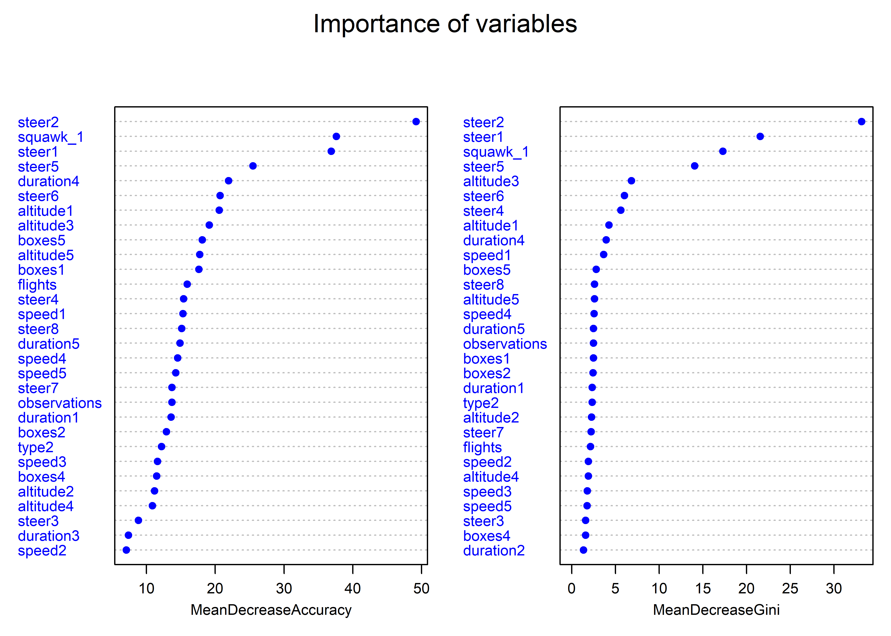

Last updated: 2020-07-23
Checks: 7 0
Knit directory: spy_plane_rework/
This reproducible R Markdown analysis was created with workflowr (version 1.6.2). The Checks tab describes the reproducibility checks that were applied when the results were created. The Past versions tab lists the development history.
Great! Since the R Markdown file has been committed to the Git repository, you know the exact version of the code that produced these results.
Great job! The global environment was empty. Objects defined in the global environment can affect the analysis in your R Markdown file in unknown ways. For reproduciblity it’s best to always run the code in an empty environment.
The command set.seed(20200723) was run prior to running the code in the R Markdown file. Setting a seed ensures that any results that rely on randomness, e.g. subsampling or permutations, are reproducible.
Great job! Recording the operating system, R version, and package versions is critical for reproducibility.
Nice! There were no cached chunks for this analysis, so you can be confident that you successfully produced the results during this run.
Great job! Using relative paths to the files within your workflowr project makes it easier to run your code on other machines.
Great! You are using Git for version control. Tracking code development and connecting the code version to the results is critical for reproducibility.
The results in this page were generated with repository version 3c1ed15. See the Past versions tab to see a history of the changes made to the R Markdown and HTML files.
Note that you need to be careful to ensure that all relevant files for the analysis have been committed to Git prior to generating the results (you can use wflow_publish or wflow_git_commit). workflowr only checks the R Markdown file, but you know if there are other scripts or data files that it depends on. Below is the status of the Git repository when the results were generated:
Ignored files:
Ignored: .Rproj.user/
Note that any generated files, e.g. HTML, png, CSS, etc., are not included in this status report because it is ok for generated content to have uncommitted changes.
These are the previous versions of the repository in which changes were made to the R Markdown (analysis/analysis.Rmd) and HTML (docs/analysis.html) files. If you’ve configured a remote Git repository (see ?wflow_git_remote), click on the hyperlinks in the table below to view the files as they were in that past version.
| File | Version | Author | Date | Message |
|---|---|---|---|---|
| Rmd | 3c1ed15 | sciencificity | 2020-07-23 | Added reproduced analysis of Buzzfeed |
Data and R code for the analysis supporting this August 7, 2017 BuzzFeed News post on identifying potential surveillance aircraft. Supporting files are in this GitHub repository.
BuzzFeed News obtained more than four months of aircraft transponder detections from the plane tracking website Flightradar24, covering August 17 to December 31, 2015 UTC, containing all data displayed on the site within a bounding box encompassing the continental United States, Alaska, Hawaii, and Puerto Rico.
Flightradar24 receives data from its network of ground-based receivers, supplemented by a feed from ground radars provided by the Federal Aviation Administration (FAA) with a five-minute delay.
After parsing from the raw files supplied by Flightradar24, the data included the following fields, for each transponder detection:
adshex Unique identifier for each aircraft, corresponding to its “Mode-S” code, in hexademical format.flight_id Unique identifier for each “flight segment,” in hexadecimal format. A flight segment is a continuous series of transponder detections for one aircraft. There may be more than one segment per flight, if a plane disappears from Flightradar24’s coverage for a period — for example when flying over rural areas with sparse receiver coverage. While being tracked by Fightradar24, planes were typically detected several times per minute.latitude, longitude Geographic location in digital degrees.altitude Altitude in feet.speed Ground speed in knots.squawk Four-digit code transmitted by the transponder.type Aircraft manufacter and model, if identified.timestamp Full UTC timestamp.track Compass bearing in degrees, with 0 corresponding to north.We also calculated:
steer Change in compass bearing from the previous transponder detection for that aircraft; negative values indicate a turn to the left, positive values a turn to the right.Using the same data, we had previously reported on flights of spy planes operated by the FBI and the Department of Homeland Security (DHS), and reasoned that it should be possible to train a machine learning algorthim to identify other aircraft performing similar surveillance, based on characteristics of the aircraft and their flight patterns.
First we filtered the data to remove planes registered abroad, based on their adshex code, common commercial airliners, based on their type, and aircraft with fewer than 500 transponder detections.
Then we took a random sample of 500 aircraft and calculated the following for each one:
duration of each flight segment recorded by Flightradar24, in minutes.boxes Area of a rectangular bounding box drawn around each flight segment, in square kilometers.Finally, we calculated the following variables for each of the aircraft in the larger filtered dataset:
duration1,duration2,duration3,duration4,duration5 Proportion of flight segment durations for each plane falling into each of five quantiles calculated from duration for the sample of 500 planes. The proportions for each aircraft must add up to 1; if the durations of flight segments for a plane closely matched those for a typical plane from the sample, these numbers would all approximate to 0.2; a plane that mostly flew very long flights would have large decimal fraction for duration5.boxes1,boxes2,boxes3,boxes4,boxes5 Proportion of bounding box areas for each plane falling into each of five quantiles calculated from boxes for the sample of 500 planes.speed1,speed2,speed3,speed4,speed5 Proportion of speed values recorded for the aircraft falling into each of five quantiles recorded for speed for the sample of 500 planes.altitude1,altitude2,altitude3,altitude4,altitude5 Proportion of altitude values recorded for the aircraft falling into each of five quantiles recorded for altitude for the sample of 500 planes.steer1,steer2,steer3,steer4,steer5,steer6,steer7,steer8 Proportion of steer values for each aircraft falling into bins set manually, after observing the distribution for the sample of 500 planes, using the breaks: -180, -25, -10, -1, 0, 1, 22, 45, 180.flights Total number of flight segments for each plane.squawk_1 Squawk code used most commonly by the aircraft.observations Total number of transponder detections for each plane.type Aircraft manufacter and model, if identified, else unknown.The resulting data for 19,799 aircraft are in the file planes_features.csv.
For the machine learning, we selected the random forest algorithm, popular among data scientists for classification tasks. (See this tutorial for background on running the random forest in R.)
As training data, drawn from planes_features.csv, we used 97 fixed-wing FBI and DHS planes from our previous story, given a class of surveil, and a random sample of 500 other planes, given a class of other.
Data identifying these planes is in the file train.csv.
# load required packages
library(readr)
library(dplyr)
library(randomForest)
# load planes_features data
planes <- read_csv("data/planes_features.csv")
# convert type to integers, as new variable type2, so it can be used by the random forest algorithm
planes <- planes %>%
mutate(type2=as.integer(as.factor(type)))
# load training data and join to the planes_features data
train <- read_csv("data/train.csv") %>%
inner_join(planes, by="adshex")We then trained the random forest algorithm using this data.
# set seed for reproducibility of model fit
set.seed(415)
# train the random forest
fit <- randomForest(as.factor(class) ~ duration1 + duration2 + duration3 + duration4 + duration5 + boxes1 + boxes2 + boxes3 + boxes4 + boxes5 + speed1 + speed2 + speed3 + speed4 + speed5 + altitude1 + altitude2 + altitude3 + altitude4 + altitude5 + steer1 + steer2 + steer3 + steer4 + steer5 + steer6 + steer7 + steer8 + flights + squawk_1 + observations + type2,
data=train,
importance=TRUE,
ntree=2000)One useful feature of the random forest is that it is possible to see which of the input variables are most important to the trained model.
# look at which variables are important in model
varImpPlot(fit, pch = 19, main = "Importance of variables", color = "blue", cex = 0.7)
MeanDecreaseAccuracy measures the overall decrease in accurancy of the model if each variable is removed. MeanDecreaseGini measures the extent to which each variable plays a role in partitioning the data into the defined classes.
So these two charts show that the steer1 and steer2 variables, quantifying the frequency of turning hard to the left, and squawk_1, the most common squawk code broadcast by a plane’s transponder, were the most important to the model.
We then examined the model’s performance, from its estimated errors in classifying the training data.
# look at estimated model performance
print(fit)
Call:
randomForest(formula = as.factor(class) ~ duration1 + duration2 + duration3 + duration4 + duration5 + boxes1 + boxes2 + boxes3 + boxes4 + boxes5 + speed1 + speed2 + speed3 + speed4 + speed5 + altitude1 + altitude2 + altitude3 + altitude4 + altitude5 + steer1 + steer2 + steer3 + steer4 + steer5 + steer6 + steer7 + steer8 + flights + squawk_1 + observations + type2, data = train, importance = TRUE, ntree = 2000)
Type of random forest: classification
Number of trees: 2000
No. of variables tried at each split: 5
OOB estimate of error rate: 3.69%
Confusion matrix:
other surveil class.error
other 497 3 0.0060000
surveil 19 78 0.1958763This output shows that overall, the estimated classification error rate was 3.7%. For the target surveil class, representing likely surveillance aircraft, the estimated error rate was 20.6%. We experimented with simplifying the model, removing some of the less important variables, but that did not appreciably improve its performance.
(A more thorough approach to testing and refining a model’s performance would involve splitting the training dataset, and keeping a portion to one side to evaluate the trained model. However, for our goal of providing an initial screen for potential surveillance aircraft, to inform subsequent reporting, the initial model was adequate.)
We then used the model to classify all of the planes in the data, after first removing the planes used in training data and a list of known federal law enforcement aircraft, which are identified in the file feds.csv.
# load data on known federal planes
feds <- read_csv("data/feds.csv")
# create dataset to classify
classify <- anti_join(planes, train) %>%
anti_join(feds)
# run the random forest model on that dataset
prediction <- predict(fit, classify)
# create data frame with predictions from random forest, by plane
classified <- data.frame(adshex = classify$adshex, class = prediction)# summarize to see how many planes classified as candidate surveillance aircraft
classified_summary <- classified %>%
group_by(class) %>%
summarize(count=n())
print(classified_summary)# A tibble: 2 x 2
class count
<fct> <int>
1 other 19087
2 surveil 73The output shows that the model classified 69 planes as likely surveillance aircraft. Given the likelihood of some misclassification, we ran the analysis again to calculate a probability that each plane matched the surveil and other classes. We sorted them in descending order of probability of membership of the surveil class, and selected the top 100 for further investigation, including the variable squawk_1 in the data, as some specific codes contain useful information — for example those restricted for use by federal law enforcement.
# run the random forest model again to get probabilities of membership of each class, rather than binary classification
prediction_probs <- as.data.frame(predict(fit, classify, type = "prob"))
# create data frame with predictions from random forest, by plane
classified_probs <- bind_cols(as.data.frame(classify$adshex), prediction_probs) %>%
mutate(adshex = classify$adshex) %>%
select(2:4) %>%
arrange(desc(surveil)) %>%
inner_join(planes) %>%
select(1:3,squawk_1)
# select the top 100 candidates
candidates <- head(classified_probs, 100)Before exporting, we joined to data from the FAA aircraft registration database, to include where available the planes’ registration numbers and the organizations they are registered to.
# load and process FAA registration data (here using download from Jul 25, 2017, to reflect current registration)
faa <- read_csv("data/faa-registration.csv") %>%
select(1,7,34)
names(faa) <- c("n_number","name","adshex")
faa <- faa %>%
mutate(reg = paste0("N",n_number)) %>%
select(2:4)
# join to FAA registration data to obtain information on each plane's registration numbers and registered owners/operators
candidates <- left_join(candidates,faa, by="adshex")
# export data
write_csv(candidates, "data/candidates.csv", na="")The file candidates_annotated.csv includes some notes on these 100 aircraft, following further research and reporting.
sessionInfo()R version 3.6.3 (2020-02-29)
Platform: x86_64-w64-mingw32/x64 (64-bit)
Running under: Windows 10 x64 (build 18363)
Matrix products: default
locale:
[1] LC_COLLATE=English_South Africa.1252 LC_CTYPE=English_South Africa.1252
[3] LC_MONETARY=English_South Africa.1252 LC_NUMERIC=C
[5] LC_TIME=English_South Africa.1252
attached base packages:
[1] stats graphics grDevices utils datasets methods base
other attached packages:
[1] randomForest_4.6-14 dplyr_1.0.0 readr_1.3.1
[4] workflowr_1.6.2
loaded via a namespace (and not attached):
[1] Rcpp_1.0.4.6 knitr_1.28 whisker_0.4 magrittr_1.5
[5] hms_0.5.3 tidyselect_1.1.0 R6_2.4.1 rlang_0.4.6
[9] fansi_0.4.1 stringr_1.4.0 tools_3.6.3 xfun_0.13
[13] utf8_1.1.4 cli_2.0.2 git2r_0.26.1 ellipsis_0.3.1
[17] htmltools_0.4.0 assertthat_0.2.1 yaml_2.2.1 digest_0.6.25
[21] rprojroot_1.3-2 lifecycle_0.2.0 tibble_3.0.1 crayon_1.3.4
[25] purrr_0.3.4 later_1.0.0 vctrs_0.3.1 promises_1.1.0
[29] fs_1.4.1 glue_1.4.1 evaluate_0.14 rmarkdown_2.1
[33] stringi_1.4.6 pillar_1.4.4 compiler_3.6.3 generics_0.0.2
[37] backports_1.1.6 httpuv_1.5.2 pkgconfig_2.0.3